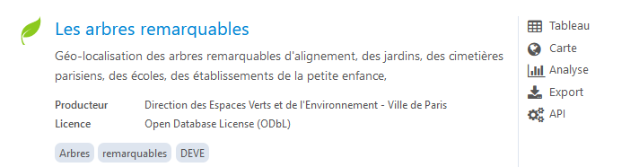

L’objectif de ce chapitre est d’examiner en détail le fonctionnement du site public.opendatasoft qui permet d’accèder à des centaines d’API à l’aide de requêtes normalisées. Sans apprendre en détail le fonctionnement de cette API, on va montrer comment créer de petites fonctions facilitant le travail d’exportation des variables ou des données.
Direction Générale des Collectivités Locales (DGCL)
provincie, kadaster
public
2021-10-20T07:54:50+00:00
CC 0 1.0
Opendatasoft
country , boundary , Natural Earth
public
2020-03-04T12:35:21+00:00
Public domain
Natural Earth
nomenclature des actes budgétaires, collectivités locales , comptabilité , plan de comptes , Totem
public
2021-06-09T11:27:44+00:00
Open License v2.0
Direction Générale des Collectivités Locales (DGCL)
subdistrict, nafa , nafot , county , department
public
2022-04-14T00:23:01+00:00
NA
Opendatasoft
Production, déchets
public
2017-11-30T16:21:07+00:00
Open License v1.0
Ministère de l’Écologie, du Développement durable et de l’Énergie
On suppose que le choix s’est porté sur l’API arbresremarquablesparis2011

Liste des variables d’une API
Avant de télécharger les données, on effectue une requête pour connaître les variables du tableau que l’on va télécharger ainsi que les variables pouvant servir de “facettes” c’est-à-dire permettant d’effectuer des requêtes.
name label type annotations.facet
1 idbase IDBASE double NA
2 libellefrancais LIBELLEFRANCAIS text TRUE
3 genre GENRE text TRUE
4 espece ESPECE text TRUE
5 adresse ADRESSE text NA
6 typeemplacement TYPEEMPLACEMENT text NA
annotations.hierarchical annotations.unit annotations.facetsort
1 <NA> <NA> <NA>
2 <NA> <NA> <NA>
3 / <NA> <NA>
4 / <NA> <NA>
5 <NA> <NA> <NA>
6 <NA> <NA> <NA>
annotations.timeserie_precision description
1 <NA> NA
2 <NA> NA
3 <NA> NA
4 <NA> NA
5 <NA> NA
6 <NA> NA
Le tableau est correct, mais il présente une structure inhabituelle puisqu’on trouve un dataframe à l’intérieur de chaque ligne de la variable annotations. On va donc éviter les ennuis en ne gardant que les deux premières colonnes
var <- var %>%select(-annotations)kable(var)
name
label
type
description
idbase
IDBASE
double
NA
libellefrancais
LIBELLEFRANCAIS
text
NA
genre
GENRE
text
NA
espece
ESPECE
text
NA
adresse
ADRESSE
text
NA
typeemplacement
TYPEEMPLACEMENT
text
NA
domanialite
DOMANIALITE
text
NA
arrondissement
ARRONDISSEMENT
text
NA
complementadresse
COMPLEMENTADRESSE
text
NA
numero
NUMERO
text
NA
idemplacement
IDEMPLACEMENT
text
NA
circonferenceencm
CIRCONFERENCE EN CM
double
NA
hauteurenm
HAUTEUR EN M
double
NA
stadedeveloppement
STADEDEVELOPPEMENT
text
NA
pepiniere
PEPINIERE
text
NA
varieteoucultivar
VARIETE OU CULTIVAR
text
NA
dateplantation
DATEPLANTATION
datetime
NA
remarquable
REMARQUABLE
text
NA
geom_x_y
Geo point
geo_point_2d
NA
Fonction
On le transforme en fonction pour un usage plus simple :
get_variables<-function(idtab ="arbresremarquablesparis2011") { url<-paste("https://public.opendatasoft.com/api/v2/catalog/datasets/",idtab,"?",sep="") x<-GET(url) y<-fromJSON(rawToChar((x$content))) var<-y$dataset$fields var <- var %>%select(-annotations)return(var)}
On peut désormais appliquer notre fonction sur n’importe quel autre tableau du catalogue. Par exemple, si on choisit le tableau qualite_de-lair-france on obtient la liste de variables suivante :
SQUARE CARNOT - AVENUE DAUMESNIL / ESPLANADE DU CHATEAU DE VINCENNES
tulipifera
2002370
NA
22
48.868573, 2.313326
209
Mature
OUI
Calocedrus
Inconnue
1700-01-01T00:09:21+00:00
Arbre
PARIS 8E ARRDT
Secteur Marigny
000103002
Libocèdre
Jardin
JARDINS DES CHAMPS ELYSEES - SQUARE MARIGNY / 41 AVENUE GABRIEL
decurrens
307478
NA
6
48.858754, 2.295499
205
Adulte
OUI
Fagus
Inconnue
1700-01-01T00:09:21+00:00
Arbre
PARIS 7E ARRDT
Canton 03 / SETE
P00306006
Hêtre
Jardin
JARDIN DU CHAMP DE MARS ET PELOUSES DE L ECOLE MILITAIRE / SETE
sylvatica
108183
‘’Pendula’’
20
48.822604, 2.336701
400
Mature
OUI
Fagus
Inconnue
1700-01-01T00:09:21+00:00
Arbre
PARIS 14E ARRDT
Grande pelouse
031302006
Hêtre
Jardin
PARC MONTSOURIS / 28 BOULEVARD JOURDAN
sylvatica
113328
‘’Riversii’’
12
48.847611, 2.253143
132
Adulte
OUI
Firmiana
Inconnue
1700-01-01T00:09:21+00:00
Arbre
PARIS 16E ARRDT
NA
00030001
Sterculier
Jardin
JARDIN DES SERRES D AUTEUIL / 1 AVENUE GORDON BENNETT
simplex
136446
NA
13
48.857417, 2.314725
155
Adulte
OUI
Magnolia
Inconnue
1700-01-01T00:09:21+00:00
Arbre
PARIS 7E ARRDT
07-10
000202001
Magnolia
Jardin
SQUARE D AJACCIO / 127 RUE DE GRENELLE
grandiflora
109016
NA
7
48.868295, 2.363189
53
Jeune (arbre)
OUI
Quercus
GUILLOT BOURNE
2017-11-09T01:00:00+00:00
Arbre
PARIS 10E ARRDT
NA
000401009
Chêne
Alignement
PLACE DE LA REPUBLIQUE
cerris
2017817
NA
30
48.880335, 2.381305
725
Mature
OUI
Platanus
Inconnue
1700-01-01T00:09:21+00:00
Arbre
PARIS 19E ARRDT
19-08
H0690012
Platane
Jardin
PARC DES BUTTES CHAUMONT
x hispanica
102141
NA
25
48.863391, 2.240481
468
Mature
OUI
Cedrus
Inconnue
1862-01-01T00:09:21+00:00
Arbre
BOIS DE BOULOGNE
16-09
000301002
Cèdre
Jardin
GRANDE CASCADE - CARREFOUR DE LONGCHAMP
libani
2002348
NA
31
48.87858, 2.30756
645
Mature
OUI
Platanus
Inconnue
1700-01-01T00:09:21+00:00
Arbre
PARIS 8E ARRDT
08-02
00SO0222
Platane
Jardin
PARC MONCEAU
orientalis
313940
NA
Fonction
On peut ensuite écrire une fonction qui précise le nombre d’enregistrements à lire avec le paramètre raws= et le point de départ de la lecture avec le paramètre start= (sachant que le premier enregistrement correspond à la valeur 0). On pourra ensuite procéder à des téléchargements successifs en évitant de dépasser la valeur raws=10000 car en génral cela bloque le fonctionnement des API. Pour télécharger un tableau ayant plus de 10000 lignes, il faudra de préférence créer une boucle qui ramène des paquets de 10000.
Dans le cas du tableau des arbres remarquables à paris, il n’y a que 178 enregistrements et il suffit donc de mettre une valeur de raws supérieure pour récupérer tout le tableau :
Par contre la base SIRENE comporte 34 millions d’enregistrement et il va être impossible de la télécharger d’un coup à l’aide d’une API. Dès que la valeur rows dépasse 10000, l’API refuse de renvoyer les résultats
L’intérêt principal d’une API est de procéder à des sélections d’enregistrement en amont de leur téléchargement. On va utiliser pour cela les facettes qui correspondent aux variables pour lesquelles l’API a prévu des index permettant une extraction rapide.
Sélection
Supposons par exemple qu’on ne veuille extraire que les arbres remarquables de la famille des chênes (genre = Quercus). Cela correspond à l’ajout à la fin de l’instruction GET d’une instruction refine prenant ici la forme refine.genre=Quercus.
PENTE DE GRAVELLE - AVENUE DE GRAVELLE / ROUTE NOUVELLE
ilex
2002385
12-15
30
48.834174, 2.461321
431
Mature
OUI
Quercus
Inconnue
1784-01-01T00:09:21+00:00
Arbre
BOIS DE VINCENNES
12-25
Chêne
Jardin
LAC DES MINIMES - ROUTE RONDE DES MINIMES
robur
2002376
12-25
10
48.873681, 2.290252
207
Mature
OUI
Quercus
Inconnue
1700-01-01T00:09:21+00:00
Arbre
PARIS 16E ARRDT
000206003
Chêne
Jardin
JARDIN DE L AVENUE FOCH / 10 AVENUE FOCH
ilex
114867
PELOUSE 10 - 20 à 26
30
48.843308, 2.449743
465
Mature
OUI
Quercus
Inconnue
1815-01-01T00:09:21+00:00
Arbre
BOIS DE VINCENNES
12-26
Chêne
Jardin
FORT NEUF - AVENUE DE LA PEPINIERE / ROUTE DU GRAND MARECHAL
robur
2002375
12-26
15
48.833021, 2.349918
140
Adulte
OUI
Quercus
Inconnue
1700-01-01T00:09:21+00:00
Arbre
PARIS 13E ARRDT
000301002
Chêne
Jardin
SQUARE RENE LE GALL / 1 RUE EMILE DESLANDRES
cerris
104839
Roseraie
15
48.839644, 2.300976
180
Adulte
OUI
Quercus
Inconnue
1700-01-01T00:09:21+00:00
Arbre
PARIS 15E ARRDT
000106001
Chêne
Jardin
SQUARE DE LA PLACE ADOLPHE CHERIOUX / 260 RUE DE VAUGIRARD
frainetto
113597
NA
11
48.847173, 2.252866
232
Mature
OUI
Quercus
Inconnue
1895-01-01T00:09:21+00:00
Arbre
PARIS 16E ARRDT
00040054
Chêne
Jardin
JARDIN DES SERRES D AUTEUIL / 1 AVENUE GORDON BENNETT
suber subsp. Occidentalis
136338
NA
13
48.84657, 2.25242
237
Mature
OUI
Quercus
Inconnue
1700-01-01T00:09:21+00:00
Arbre
PARIS 16E ARRDT
00040039
Chêne
Jardin
JARDIN DES SERRES D AUTEUIL / 1 AVENUE GORDON BENNETT
ilex
136323
NA
15
48.821839, 2.335786
255
Mature
OUI
Quercus
Inconnue
1700-01-01T00:09:21+00:00
Arbre
PARIS 14E ARRDT
0311B1011
Chêne
Jardin
PARC MONTSOURIS / 28 BOULEVARD JOURDAN
ilex
110934
Volcan / Puits
14
48.838816, 2.406567
169
Adulte
OUI
Quercus
Inconnue
1990-01-01T01:00:00+00:00
Arbre
PARIS 12E ARRDT
000202001
Chêne
Jardin
SQUARE CHARLES PEGUY / 21 RUE ROTTEMBOURG
frainetto
123156
NA
Exclusion
On peut de la même manière exclure au lieu de sélectionner en utilisant l’instruction exclude. Par exemple, on peut retirer les deux bois de Vincennes et de Boulogne qui sont identifiés dans la variable arrondissement. Il ne rste plus alors que 130 arbres remarquables au lieu de 178.
PARIS 10E ARRDT PARIS 11E ARRDT PARIS 12E ARRDT PARIS 13E ARRDT PARIS 14E ARRDT
1 1 3 4 10
PARIS 15E ARRDT PARIS 16E ARRDT PARIS 17E ARRDT PARIS 18E ARRDT PARIS 19E ARRDT
6 27 8 10 10
PARIS 1ER ARRDT PARIS 20E ARRDT PARIS 3E ARRDT PARIS 4E ARRDT PARIS 5E ARRDT
1 14 3 5 6
PARIS 6E ARRDT PARIS 7E ARRDT PARIS 8E ARRDT PARIS 9E ARRDT
1 9 5 2
Sélection géographique
Une autre possibilité offerte par l’application est d’extraire des enregistrements en fonction d’une localisation géographique et d’une distance maximale à celle-ci. Supposons par exemple que l’on souhaite trouver l’ensemble des arbres remarquables dans un rayon de 2 km autour du bâtiment Olympe de Gouges situé place Paul Ricoeur dans le 13e arrondissement. Pour résoudre le problème, on commence par déterminer les coordonnées du lieu cible ce qui peut se faire par un click droit dans une Google Map :
knitr::include_graphics("img/coord_odg.png")
On passe ensuite une requête incluant le paramètre geofilter.distance()assortie des trois paramètres de latitude (en degré décimal), longitude (en degré décimal) et distance (en mètres) avec comme séparateur %2Cce qui donne au final un tableau ne comportant que 3 arbres remarquables à moins de deux kilomètres du point choisi :
JARDIN DE LA GARE DE REUILLY - JULIEN LAUPRETRE / 6 RUE PAUL DUKAS
Libocèdre
1728.7655425984415
20
205
Fonction
Nous pouvons alors créer une petite fonction qui va automatiquement sélectionner les arbres en fonction d’une coordonnée et d’une distance choisies par l’utilisateur :
Notre fonction est paramétrée par défaut sur la place Paul Ricoeur pour un rayon de 2000 mètres mais on peut ensuite changer les paramètres comme on le souhaite. On peut par exemple rechercher les arbres remarquables dans un rayon de 500 mètres autour de la cathédrale Notre Dame de Paris.
Mais notre fonction peut également marcher pour d’autres tableaux si ceux-ci ont la même structure. On peut ainsi examiner les entreprises localisées à moins de 50 mètres du bâtiment d’Olympe de Gouges à l’aide de la base SIREN et on trouve 11 références :
ELIPS (ETUDIANTS DE LINGUISTIQUE INFORMATIQUE DE PARIS DIDEROT)
8 PL PAUL RICOEUR
Autres activites de services
Association déclarée
87776849900015
GEOMIE
PL PAUL RICOEUR
Autres activites de services
Association déclarée
18750006101539
CENTRE REGIONAL OEUVRES UNIV SCOLAIRES
8 PL PAUL RICOEUR
Hebergement et restauration
Autre établissement public national administratif à compétence territoriale limitée
90059716200016
INGENIEURS SANS FRONTIERES, EQUIPE DE L’UNIVERSITE DE PARIS
8 PL PAUL RICOEUR
Autres activites de services
Association déclarée
82868797000016
JUNIOR EIDD CONSEIL
8 PL PAUL RICOEUR
Activites specialisees, scientifiques et techniques
Association déclarée
78887970800014
SIMULAUTO
9 RUE ALBERT EINSTEIN
Enseignement
SAS, société par actions simplifiée
79378675700013
PARIS PERMIS
9 RUE ALBERT EINSTEIN
Enseignement
Société à responsabilité limitée (sans autre indication)
87973678300017
Madame HELENE DUPLANTIER
7 RUE ALBERT EINSTEIN
Arts, spectacles et activites recreatives
Entrepreneur individuel
84262529500014
Madame JOANA FONSECA LEITAO
7 RUE ALBERT EINSTEIN
Activites de services administratifs et de soutien
Entrepreneur individuel
81325823300028
COMPAGNIE LES ENVOLEES
7 RUE ALBERT EINSTEIN
Arts, spectacles et activites recreatives
Association déclarée
88086923500015
STREET BIDA
1 RUE NICOLE REINE LEPAUTE
Hebergement et restauration
SAS, société par actions simplifiée
Exercice
Essayez de récupérer les informations sur l’ensemble des ventes immobilières de maisons commune de Montcuq-en-Quercy-Blanc (Code Postal 46800) au cours de l’année 2020 puis calculés le prix moyen par m2 de